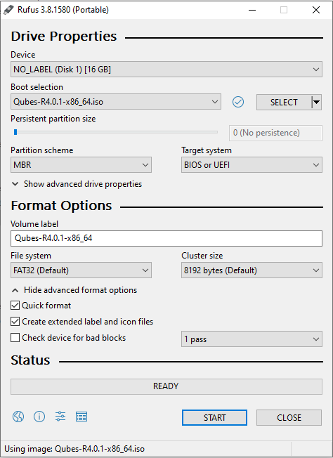
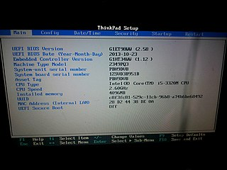
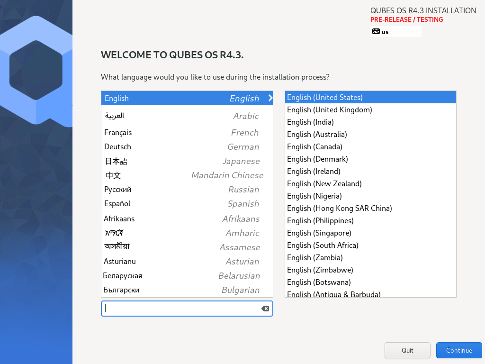
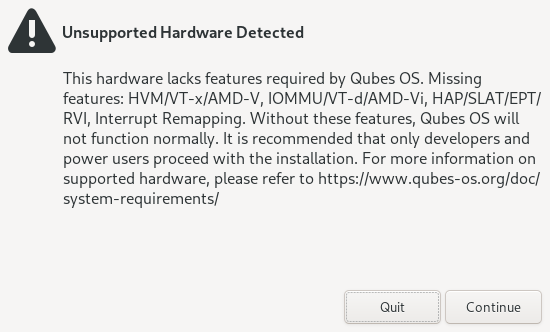
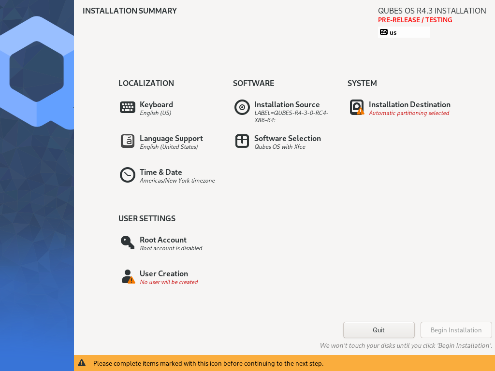
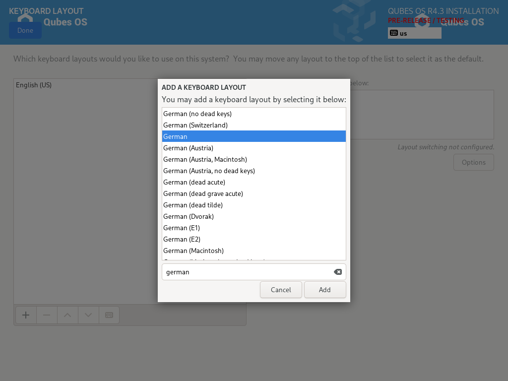
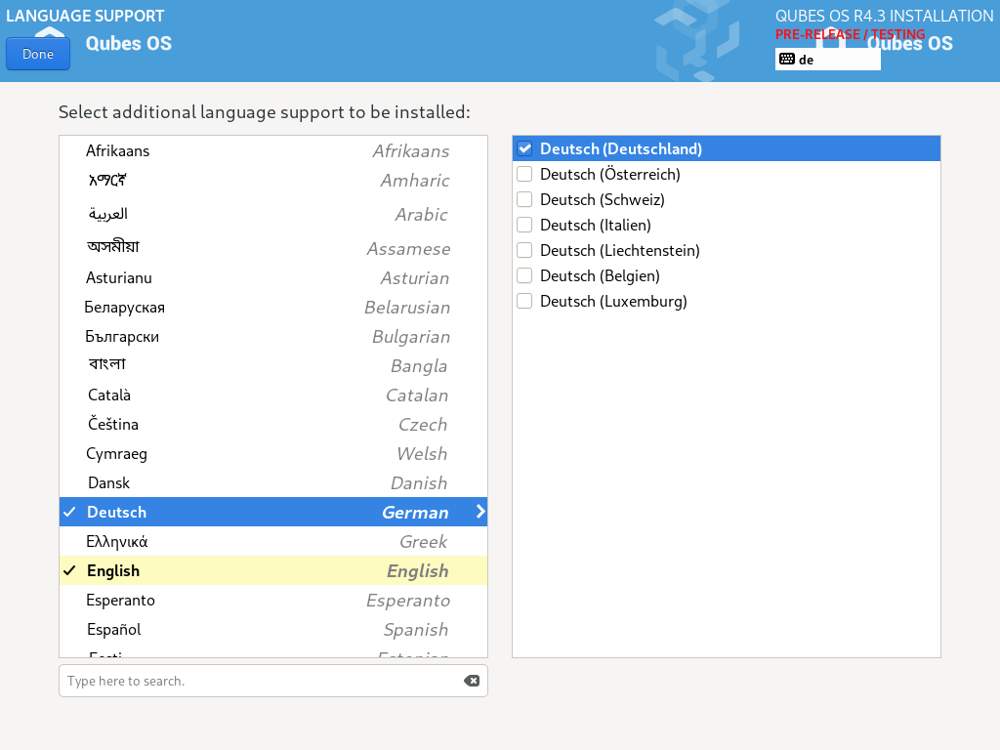

Installation guide
Welcome to the Qubes OS installation guide! This guide will walk you through the process of installing Qubes. Please read it carefully and thoroughly, as it contains important information for ensuring that your Qubes OS installation is functional and secure.
Pre-installation
Hardware requirements
Danger
Qubes has no control over what happens on your computer before you install it. No software can provide security if it is installed on compromised hardware. Do not install Qubes on a computer you don’t trust. See installation security for more information.
Qubes OS has very specific system requirements. To ensure compatibility, we strongly recommend using Qubes-certified hardware. Other hardware may require you to perform significant troubleshooting. You may also find it helpful to consult the Hardware Compatibility List.
Even on supported hardware, you must ensure that IOMMU-based virtualization is activated in the BIOS or UEFI. Without it, Qubes OS won’t be able to enforce isolation. For Intel-based boards, this setting is called Intel Virtualization for Directed I/O (Intel VT-d) and for AMD-based boards, it is called AMD I/O Virtualization Technology (or simply AMD-Vi). This parameter should be activated in your computer’s BIOS or UEFI, alongside the standard Virtualization (Intel VT-x) and AMD Virtualization (AMD-V) extensions. This external guide made for Intel-based boards can help you figure out how to enter your BIOS or UEFI to locate and activate those settings. If those settings are not nested under the Advanced tab, you might find them under the Security tab.
Warning
Qubes OS is not meant to be installed inside a virtual machine as a guest hypervisor. In other words, nested virtualization is not supported. In order for a strict compartmentalization to be enforced, Qubes OS needs to be able to manage the hardware directly.
Copying the ISO onto the installation medium
Pick the most secure existing computer and OS you have available for downloading and copying the Qubes ISO onto the installation medium. Download a Qubes ISO. The size of each Qubes ISO is available on the downloads page by hovering over the download button.
If your Internet connection is unstable and the download is interrupted, you could:
resume the partial download with
wget --continuein case you are currently using wget for downloading;use a download-manager with resume capability;
or alternatively you can download installation ISO via BitTorrent that sometimes enables higher download speeds and more reliable downloads of large files.
Danger
Any file you download from the internet could be malicious, even if it appears to come from a trustworthy source. Our philosophy is to distrust the infrastructure.
Regardless of how you acquire your Qubes ISO, verify its authenticity before continuing.
Once the ISO has been verified as authentic, you should copy it onto the installation medium of your choice, such as a USB drive, dual-layer DVD, or Blu-ray disc. The instructions below assume you’ve chosen a USB drive as your medium. If you’ve chosen a different medium, please adapt the instructions accordingly.
There are important security considerations to keep in mind when choosing an installation medium.
Linux ISO to USB
Danger
Be careful to choose the correct device when copying the ISO, or you may lose data. We strongly recommended making a full backup before modifying any devices.
On Linux, if you choose to use a USB drive, copy the ISO onto the USB device, e.g. using dd:
$ sudo dd if=Qubes-RX-x86_64.iso of=/dev/sdY status=progress bs=1M conv=fsync
Change Qubes-RX-x86_64.iso to the filename of the version you’re installing, and change /dev/sdY to the correct target device e.g., /dev/sdc). Make sure to write to the entire device (e.g., /dev/sdc) rather than just a single partition (e.g., /dev/sdc1). If you are doing this within Qubes OS, you must make sure that you have attached the whole device to your qube, not just a partition. The path of your target device will then be /dev/xvdY such as /dev/xvdi - avoid writing to a single partition (e.g., /dev/xvdi1).
Advanced users may wish to re-verify their installation media after writing.
Windows ISO to USB
On Windows, you can use the Rufus tool to write the ISO to a USB key. Be sure to select “Write in DD Image mode” after selecting the Qubes ISO and pressing “START” on the Rufus main window.
Note
Using Rufus to create the installation medium means that you won’t be able to choose the “Test this media and install Qubes OS” option mentioned in the example below. Instead, choose the “Install Qubes OS” option.


Installation
This section will demonstrate a simple installation using mostly default settings.
Getting to the boot screen
“Booting” is the process of starting your computer. When a computer boots up, it first runs low-level software before the main operating system. Depending on the computer, this low-level software may be called the “BIOS” or “UEFI”.
Since you’re installing Qubes OS, you’ll need to access your computer’s BIOS or UEFI menu so that you can tell it to boot from the USB drive to which you just copied the Qubes installer ISO.
To begin, power off your computer and plug the USB drive into a USB port, but don’t press the power button yet. Right after you press the power button, you’ll have to immediately press a specific key to enter the BIOS or UEFI menu. The key to press varies from brand to brand. Esc, Del, and F10 are common ones. If you’re not sure, you can search the web for <COMPUTER_MODEL> BIOS key or <COMPUTER_MODEL> UEFI key (replacing <COMPUTER_MODEL> with your specific computer model) or look it up in your computer’s manual.
Once you know the key to press, press your computer’s power button, then repeatedly press that key until you’ve entered your computer’s BIOS or UEFI menu. To give you an idea of what you should be looking for, we’ve provided a couple of example photos below.
Here’s an example of what the BIOS menu looks like on a ThinkPad T430:

And here’s an example of what a modern UEFI menu looks like:

Once you access your computer’s BIOS or UEFI menu, you’ll want to go to the “boot menu”, which is where you tell your computer which devices to boot from. The goal is to tell the computer to boot from your USB drive so that you can run the Qubes installer. If your boot menu lets you select which device to boot from first, simply select your USB drive. (If you have multiple entries that all look similar to your USB drive, and you’re not sure which one is correct, one option is just to try each one until it works.) If, on the other hand, your boot menu presents you with a list of boot devices in order, then you’ll want to move your USB drive to the top so that the Qubes installer runs before anything else.
Then, if you are on a computer using UEFI, you’ll have to disable Secure Boot to allow Qubes OS to boot.
Once you’re done with the settings, save your changes. How you do this depends on your BIOS or UEFI, but the instructions should be displayed right there on the screen or in a nearby tab. (If you’re not sure whether you’ve saved your changes correctly, you can always reboot your computer and go back into the boot menu to check whether it still reflects your changes.) Once your BIOS or UEFI is configured the way you want it, reboot your computer. This time, don’t press any special keys. Instead, let the BIOS or UEFI load and let your computer boot from your USB drive. If you’re successful in this step, after a few seconds you’ll be presented with the Qubes installer screen:

From here, you can navigate the boot screen using the arrow keys on your keyboard. Pressing the “Tab” key will reveal options. You can choose one of five options:
Install Qubes OS
Test this media and install Qubes OS
Troubleshooting - verbose boot
Rescue a Qubes OS system
Install Qubes OS 4.2.1 using kernel-latest
Select the option to test this media and install Qubes OS.
Note
If the latest stable release is not compatible with your hardware, you may wish to consider installing using the latest kernel. Be aware that this has not been as well tested as the standard kernel.
If the boot screen does not appear, there are several options to troubleshoot. First, try rebooting your computer. If it still loads your currently installed operating system or does not detect your installation medium, make sure the boot order is set up appropriately. The process to change the boot order varies depending on the currently installed system and the motherboard manufacturer. If Windows 10 is installed on your machine, you may need to follow specific instructions to change the boot order. This may require an advanced reboot.
The installer home screen
On the first screen, you are asked to select the language that will be used during the installation process. When you are done, select Continue.

Prior to the next screen, a compatibility test runs to check whether IOMMU-virtualization is active or not. If the test fails, a window will pop up.

Do not panic. It may simply indicate that IOMMU-virtualization hasn’t been activated in the BIOS or UEFI. Return to the Hardware requirements section to learn how to activate it. If the setting is not configured correctly, it means that your hardware won’t be able to leverage some Qubes security features, such as a strict isolation of the networking and USB hardware.
If the test passes, you will reach the installation summary screen. The installer loads Xen right at the beginning. If you can see the installer’s graphical screen, and you pass the compatibility check that runs immediately afterward, Qubes OS is likely to work on your system!
Like Fedora, Qubes OS uses the Anaconda installer. Those that are familiar with RPM-based distributions should feel at home.
Installation summary
Did you know?
The Qubes OS installer is completely offline. It doesn’t even load any networking drivers, so there is no possibility of internet-based data leaks or attacks during the installation process.
The Installation summary screen allows you to change how the system will be installed and configured, including localization settings. At minimum, you are required to select the storage device on which Qubes OS will be installed.

Localization
Let’s assume you wish to add a German keyboard layout. Go to Keyboard Layout, press the “Plus” symbol, search for “German” as indicated in the screenshot and press “Add”. If you want it be your default language, select the “German” entry in the list and press the arrow button. Click on “Done” in the upper left corner, and you’re ready to go!

The process to select a new language is similar to the process to select a new keyboard layout. Follow the same process in the “Language Support” entry.

You can have as many keyboard layout and languages as you want. Post-install, you will be able to switch between them and install others.
Don’t forget to select your time and date by clicking on the Time & Date entry.

Installation destination
Under the System section, you must choose the installation destination. Select the storage device on which you would like to install Qubes OS.
Danger
Be careful to choose the correct installation target, or you may lose data. We strongly recommended making a full backup before proceeding.
Your installation destination can be an internal or external storage drive, such as an SSD, HDD, or USB drive. The installation destination must have a least 32 GiB of free space available.
Warning
The installation destination cannot be the same as the installation medium. For example, if you’re installing Qubes OS from a USB drive onto a USB drive, they must be two distinct USB drives, and they must both be plugged into your computer at the same time. (Note: This may not apply to advanced users who partition their devices appropriately.)
Installing an operating system onto a USB drive can be a convenient way to try Qubes. However, USB drives are typically much slower than internal SSDs. We recommend a very fast USB 3.0 drive for decent performance. Please note that a minimum storage of 32 GiB is required. If you want to install Qubes OS onto a USB drive, just select the USB device as the target installation device. Bear in mind that the installation process is likely to take longer than it would on an internal storage device.

Did you know?
By default, Qubes OS uses LUKS /dm-crypt to encrypt everything except the /boot partition.
As soon as you press Done, the installer will ask you to enter a passphrase for disk encryption. The passphrase should be complex. Make sure that your keyboard layout reflects what keyboard you are actually using. When you’re finished, press Done.
Danger
If you forget your encryption passphrase, there is no way to recover it.

Create your user account
Select “User Creation” to create your user account. This is what you’ll use to log in after disk decryption and when unlocking the screen locker. This is a purely local, offline account in dom0. By design, Qubes OS is a single-user operating system, so this is just for you.
The new user you create has full administrator privileges and is protected by a password. Just as for the disk encryption, this password should be complex. The root account is deactivated and should remain as such.

Begin Installation
When you have completed all the items marked with the warning icon, press Begin Installation.
Installation can take some time.

When the installation is complete, press Reboot System. Don’t forget to remove the installation medium, or else you may end up seeing the installer boot screen again. Also disconnect any unneeded USB devices which are connected to the machine, including Security dongles, mouse or keyboard. (Do not disconnect USB mouse or keyboard if these are your primary devices). If you do not do this the second stage install might take decisions on your behalf lowering your security model (ie: dongles or USB keyboard being connected on next boot will punch holes so that USB keyboard can be used to control dom0, which might or might not be desired).
Post-installation
First boot
If the installation was successful, you should now see the GRUB menu during the boot process.

Just after this screen, you will be asked to enter your encryption passphrase.

Initial Setup
You’re almost done. Before you can start using Qubes OS, some configuration is needed.
 Click on the item marked with the warning triangle to enter the configuration screen.
Click on the item marked with the warning triangle to enter the configuration screen. 
By default, the installer will create a number of qubes (depending on the options you selected during the installation process). These are designed to give you a more ready-to-use environment from the get-go.
Let’s briefly go over the options:
Templates Configuration
This section provides the templates you wish to install and which one to use as the default one. The default template settings can always be changed after this initial configuration too.
Main Configuration
Create default system qubes (sys-net, sys-firewall, default DispVM): These are the core components of the system, required for things like internet access.
Make sys-firewall and sys-usb disposable: The qubes responsible for firewalling/isolating network traffic and holding certain hardware devices like USB, Bluetooth adapter, integrated cameras, etc. (sys-usb only, if applicable) will be made disposable. Enabled by default as it fits most users’ needs.
Make sys-net disposable: The net qube handling your network devices will be made disposable. This will result in loss of stored Wi-Fi passwords and therefore automatic Wi-Fi connections each time the qube gets booted. Disabled by default for a more user-friendly experience but if you don’t mind storing the aforementioned passwords e.g. in an offline password manager, you may turn it on for privacy enhancements (no broadcasting of saved Wi-Fi network names). You might also customize the disposable net qube so that your Wi-Fi credentials will be passed dynamically.
Preload disposable qubes based on the default DispVM (faster usage): If your computer has enough memory, this option will be enabled by default and transparently enqueue several disposables in the background for faster startup.
Create default application qubes (personal, work, untrusted, vault): These are how you compartmentalize your digital life. There’s nothing special about the ones the installer creates. They’re just suggestions that apply to most people. If you decide you don’t want them, you can always delete them later, and you can always create your own.
Use a qube to hold all USB controllers (create a new qube called sys-usb by default): A dedicated qube that holds certain hardware devices like USB, Bluetooth adapter, integrated cameras, etc. (sys-usb) will be created.
Use sys-net qube for both networking and USB devices: certain hardware devices will be held by sys-net instead. You should select this option if you rely on a USB device for network access, such as a USB modem or a USB Wi-Fi adapter, as this option will make the experience with them more user-friendly and seamless.
Automatically accept USB mice (discouraged): If enabled, upon the connecting of a device that presents itself as a USB mouse, it will be automatically forwarded to dom0. Disabled by default so once such device is connected, manual user interaction is required to confirm forwarding that device. This results in additional security benefits - e.g. a malicious device presenting itself as a mouse will be rendered useless until a confirmation dialog in dom0 is accepted.
Automatically accept USB keyboard (discouraged if non-USB keyboard is available): See the point above about USB mice. The same applies here. Enabling this is mostly beneficial to modern stationary workstations where only a USB keyboard can be used for typing. If you can use a PS/2 keyboard (generally laptops use an emulated PS/2 for their internal keyboards), you may want to leave this option disabled for additional security.
Warning
Note: When choosing to automatically accept USB mice or keyboards, be aware of the security considerations. For troubleshooting non-working devices, see this document.
Create Whonix Gateway and Workstation qubes (sys-whonix, anon-whonix): If you want to use Whonix, you should select this option.
Advanced Configuration
Use custom storage pool: Here you can specify custom names for the LVM pool holding your qubes’ filesystems as well as LVM Volume Group name. Unless you’re preparing a customized environment on your machine (e.g. dual booting distinct Qubes OS releases), you can leave this option unchecked.
Do not configure anything (for advanced users): This is for very advanced users only. If you select this option, you’ll have to set everything up manually afterward.
When you’re satisfied with your choices, press Done. This configuration process may take a while, depending on the speed of your computer and the selected options described above (the more templates to be installed, the longer the configuration process will take).
After configuration is done, you will be greeted by the login screen. Enter your password and log in.

Congratulations, you are now ready to use Qubes OS!

Next steps
Updating
Next, update your installation to ensure you have the latest security updates. Frequently updating is one of the best ways to remain secure against new threats.
Security
The Qubes OS Project occasionally issues Qubes Security Bulletins (QSBs) as part of the Qubes Security Pack (qubes-secpack). It is important to make sure that you receive all QSBs in a timely manner so that you can take action to keep your system secure. (While Updating will handle most security needs, there may be cases in which additional action from you is required.) For this reason, we strongly recommend that every Qubes user subscribe to the qubes-announce mailing list.
In addition to QSBs, the Qubes OS Project also publishes Canaries, XSA summaries, templates releases and end-of-life notices, and other items of interest to Qubes users. Since these are not essential for all Qubes users to read, they are not sent to qubes-announce in order to keep the volume on that list low. However, we expect that most users, especially novice users, will find them helpful. If you are interested in these additional items, we encourage you to subscribe to the Qubes News RSS feed or join one of our other venues, where these news items are also announced.
For more information about Qubes OS Project security, please see the security center.
Backups
It is extremely important to make regular backups so that you don’t lose your data unexpectedly. The Qubes backup system allows you to do this securely and easily.
Submit your HCL report
Consider giving back to the Qubes community and helping other users by generating and submitting a Hardware Compatibility List (HCL) report.
Get Started
Find out Getting Started with Qubes, check out the other How-To Guides, and learn about Templates.
Getting help
We work very hard to make the documentation accurate, comprehensive useful and user friendly. We urge you to read it! It may very well contain the answers to your questions. (Since the documentation is a community effort, we’d also greatly appreciate your help in improving it!)
If issues arise during installation, see the Installation Troubleshooting guide.
If you don’t find your answer in the documentation, please see Help, Support, Mailing Lists, and Forum for places to ask.
Please do not email individual members of the Qubes team with questions about installation or other problems. Instead, please see Help, Support, Mailing Lists, and Forum for appropriate places to ask questions.